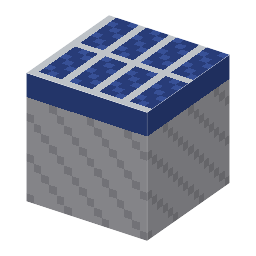

説明
①子ども 日の光をそのまま電気に変えるシリコンのパネル。第2章のゴール！
②学生 p-n 接合の板8＋銅ケーブル。昼、真上に空があれば（ガラスは通す）60W。雨・曇りの日も雲を通った散らばった光（散乱光）で晴れの約2割＝12W。夜・屋根の下は0。右クリックで出力を見られる。ほかの発電機と同じように銅ケーブルでつなぐ。本物の 1954年の電池の土台はヒ素の n型（ゲームはリン）。
③大人 真昼の日光は 1m² に約1000W。効率6% なら 1m² のブロックで 60W。1954年、ベル研は「1平方ヤードあたり約50W」と発表した。ちょうど合う。
④ガチ 1954年4月25日、チェイピン・フラー・ピアソンは「ベル太陽電池」でおもちゃの観覧車を回して見せた。1954年の電池は、くもった樹脂の膜で反射を減らし、電極は2つとも裏側。1958年には人工衛星ヴァンガード1号の電源になった。いまの家庭用は 20% を超える。
作り方
使い道
（このアイテムを使うレシピは無い）